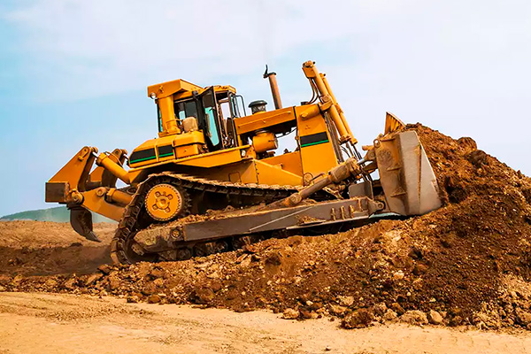

Информация о BullDozer
BullDozer ― одна из самых ценных торговых марок в мире. Машины и двигатели BullDozer получили широкое признание благодаря высочайшему качеству и надежности.
Во всем мире логотип BullDozer стал символом неустанной работы и стремления справиться с любой задачей.
Предлагаемая продукция
Оборудование BullDozer устанавливает стандарт для нашей отрасли. Линейка продукции BullDozer из более чем 200 машин ― свидетельство нашего стремления помочь успеху клиентов.
Мы останемся лидером, если продолжим помогать нашим клиентам в удовлетворении их потребности с помощью долговечного и надежного тяжелого оборудования.
Компания BullDozer располагает лучшей системой распределения и поддержки продукции в любой отрасли товаров промышленного назначения.

Преимущества BullDozer
Качество и уверенность. Продукция BullDozer отличается высочайшими характеристиками и долговечностью.
Приобретая продукцию BullDozer, вы получаете не только превосходное оборудование, но и поддержку высококвалифицированных дилеров нашей широчайшей международной сети.
Как отметил один из клиентов: Дилер BullDozer готов перевернуть весь мир для своих заказчиков
.